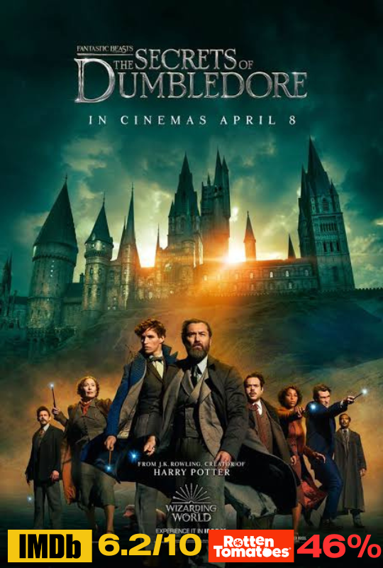

เรื่องย่อ "หลานม่า" เป็นนิยายที่เขียนโดย ยรรยง สุกิมล เรื่องราวเกี่ยวกับความรักและความผูกพันในครอบครัว
เรื่องเริ่มต้นจากการที่ตัวเอกซึ่งเป็นหลานของผู้หญิงคนหนึ่งต้องเผชิญกับความท้าทายในชีวิตและความสัมพันธ์ในครอบครัวของตนเอง
ขณะเดียวกันก็มีการสำรวจเรื่องราวความรักและการค้นหาตัวตนของตัวเอก โดยเน้นไปที่ความรักและความสำคัญของครอบครัวที่มีอิทธิพลต่อชีวิตและความสุขของตัวละครหลัก
คะแนนรีวิวจากเว็บไซต์ IMDB 7.8/10
คะแนนรีวิวจากเว็บไซต์ Rotten Tomatoes 88%
เรื่องย่อ เป็นเรื่องราวของเรือไททานิค ซึ่งเป็นเรือโดยสารที่ใหญ่ที่สุดในโลกที่มีการออกเดินทางจากอังกฤษไปยังอเมริกาในปี 1912 เรือประสบอุบัติเหตุชนกับภูเขาน้ำแข็งและจมลงสู่ก้นทะเล
เรื่องราวหลักของภาพยนตร์นี้มุ่งเน้นไปที่ความรักระหว่างสองตัวละครหลัก: แจ็ค ดอว์สัน (ลีโอนาร์โด ดิคาปริโอ) และ โรส เดวิต บูคาเตอร์ (เคต วินสเลต) ที่มาจากพื้นฐานทางสังคมที่แตกต่างกัน
แต่พวกเขาตกหลุมรักกันบนเรือ ก่อนที่เหตุการณ์เรือจมจะเกิดขึ้น นอกจากนี้ ภาพยนตร์ยังแสดงถึงความเจ็บปวดและความกล้าหาญของผู้คนที่ติดอยู่บนเรือในช่วงที่เกิดภัยพิบัติครั้งใหญ่.
คะแนนรีวิวจากเว็บไซต์ IMDB 8.6/10
คะแนนรีวิวจากเว็บไซต์ Rotten Tomatoes 79%
เรื่องย่อ เป็นนวนิยายของสตีเฟน คิงที่ถูกดัดแปลงเป็นภาพยนตร์ที่โด่งดัง เรื่องราวเกิดขึ้นในปี 1930 ที่คุกบล็อก E ซึ่งเป็นพื้นที่สำหรับนักโทษที่รอการประหารชีวิต
เนื้อเรื่องเกี่ยวกับพนักงานคุกชื่อ พอล เอจคอมบ์ ซึ่งทำงานที่คุกบล็อก E ซึ่งมีชื่อเล่นว่า "Green Mile" เพราะพื้นของคุกเป็นสีเขียว เขาพบกับนักโทษใหม่ชื่อ จอห์น คอฟฟีย์
ซึ่งถูกตัดสินประหารชีวิตในข้อหาฆาตกรรมเด็กหญิงสองคน แต่คอฟฟีย์กลับมีพลังวิเศษในการรักษาและทำสิ่งต่าง ๆ ได้อย่างมหัศจรรย์ เรื่องราวดำเนินไปด้วยการสำรวจความเป็นมนุษย์
ความยุติธรรม และการให้อภัย ผ่านความสัมพันธ์ระหว่างพอลและคอฟฟีย์ และเหตุการณ์ที่เกิดขึ้นที่คุกบล็อก E ซึ่งมีผลกระทบลึกซึ้งต่อชีวิตของพวกเขาทุกคน
คะแนนรีวิวจากเว็บไซต์ IMDB 5.2/10
คะแนนรีวิวจากเว็บไซต์ Rotten Tomatoes 14%
เรื่องย่อ เป็นนวนิยายที่เขียนโดย จอห์น แพกซ์ตัน ซึ่งเป็นเรื่องราวเกี่ยวกับการเดินทางของพระราชาที่ต้องเผชิญกับความท้าทายและความทุกข์ทรมานในระหว่างการปกครองของเขา
ผ่านเหตุการณ์ต่าง ๆ ที่สร้างความตึงเครียดและปัญหาในราชอาณาจักร โดยเน้นการสะท้อนถึงความเจ็บปวดและความกล้าหาญของตัวละครหลักในการเผชิญหน้ากับวิกฤตที่เกิดขึ้นในชีวิตของเขาและแผ่นดิน
ถ้าคุณหมายถึง "เจ้าแห่งน้ำตา" ที่เป็นงานเขียนหรือสื่ออื่น ๆ โปรดระบุเพิ่มเติมเพื่อให้ข้อมูลที่ตรงมากขึ้น
คะแนนรีวิวจากเว็บไซต์ IMDB 6.7/10
คะแนนรีวิวจากเว็บไซต์ Rotten Tomatoes 32%
เรื่องย่อ เป็นหนังสือที่เขียนโดย เลีย มอรี่และเฮเลน เฮย์ส์ ซึ่งเป็นเรื่องราวของชีวิตหญิงสาวที่มีความมุ่งมั่นและต่อสู้กับอุปสรรคในชีวิตอย่างไม่ย่อท้อ
โดยเนื้อเรื่องจะนำเสนอถึงการเติบโต การเรียนรู้ และความพยายามในการสร้างความหมายในชีวิต แม้ต้องเผชิญกับความท้าทายและความยากลำบากต่างๆ
การเรียนรู้จากประสบการณ์และการเอาชนะอุปสรรคเป็นประเด็นสำคัญที่โดดเด่นในเรื่องนี้.
คะแนนรีวิวจากเว็บไซต์ IMDB 6.9/10
คะแนนรีวิวจากเว็บไซต์ Rotten Tomatoes 67%
เรื่องย่อ เป็นภาพยนตร์อนิเมะที่กำกับโดย ฮายาโอะ มิยาซากิ และผลิตโดยสตูดิโอจิบลิ เรื่องราวเกี่ยวกับเด็กหญิงชื่อจิฮิโระที่เข้าไปในโลกที่เต็มไปด้วยภูตผีและเทพเจ้า
หลังจากที่ครอบครัวของเธอถูกแปลงร่างเป็นหมู เธอจึงต้องทำงานในโรงอาบน้ำที่ดูแลโดยแม่มดที่ชื่อ ยูกิโอะ และพยายามหาทางช่วยพ่อแม่กลับมาเป็นมนุษย์และกลับสู่โลกของตัวเอง
ในระหว่างการเดินทางเธอได้พบกับเพื่อนและเผชิญกับความท้าทายมากมาย พร้อมเรียนรู้เกี่ยวกับความกล้าหาญและความยืดหยุ่น.
คะแนนรีวิวจากเว็บไซต์ IMDB 6.2/10
คะแนนรีวิวจากเว็บไซต์ Rotten Tomatoes -%
เรื่องย่อ เป็นนวนิยายของ รอัลด์ ดาห์ล เรื่องราวเกี่ยวกับเด็กหญิงคนหนึ่งชื่อว่า "วันเดอะ"
ที่พบว่าตัวเองตกไปในโลกมหัศจรรย์ที่เต็มไปด้วยความแปลกประหลาดและการผจญภัย ในโลกนี้
เธอพบกับตัวละครที่แปลกประหลาดและต้องใช้ความฉลาดและความกล้าหาญในการแก้ไขปัญหาและกลับบ้าน
เรื่องนี้เต็มไปด้วยความมหัศจรรย์และความสนุกสนานที่เหมาะสำหรับผู้อ่านทุกวัย.
8.A Dog's Way Home (2019)
เรื่องย่อ เดวิด วิลเลียมส์ เรื่องราวเกี่ยวกับเด็กชายชื่อ "บิลลี่" ที่มีสุนัขพันธุ์บีเกิลชื่อ "สเวน" ซึ่งมีความสามารถพิเศษในการวิ่งเร็วมาก ถึงแม้ว่าสเวนจะมีพลังพิเศษนี้
แต่เขามักจะสร้างความยุ่งยากให้กับบิลลี่และครอบครัว โดยมีการผจญภัยและเหตุการณ์ที่น่าตื่นเต้นเกิดขึ้นบ่อยครั้ง เป็นเรื่องราวที่เต็มไปด้วยความสนุกสนานและอารมณ์ขัน.
คะแนนรีวิวจากเว็บไซต์ IMDB 7.6/10
คะแนนรีวิวจากเว็บไซต์ Rotten Tomatoes 89%
เรื่องย่อ เดอะ คอนเจอริง คนเรียกผี (The Conjuring)เนื้อเรื่องหลักเกี่ยวกับครอบครัวเพอร์รอน (Perron)
ที่ย้ายเข้ามาอยู่ในบ้านไร่เก่าในโรดไอแลนด์และเริ่มพบเหตุการณ์ประหลาดเหนือธรรมชาติ ทั้งสิ่งของเคลื่อนไหวเอง กลิ่นเหม็นเน่า
และการถูกรบกวนจากวิญญาณ ครอบครัวนี้จึงต้องขอความช่วยเหลือจากเอ็ดและลอร์เรน วอร์เรนเพื่อตรวจสอบและปราบผี
พวกเขาพบว่าในบ้านหลังนี้มีวิญญาณร้ายหลายตน โดยเฉพาะวิญญาณของหญิงคนหนึ่งที่เคยทำพิธีกรรมมืดและพยายามสาปแช่งครอบครัวที่อาศัยอยู่ในบ้านนี้
เรื่องราวจะตามติดการต่อสู้ของวอร์เรนในการขับไล่วิญญาณและการช่วยเหลือครอบครัวเพอร์รอนให้รอดพ้นจากเหตุการณ์สยองขวัญ
10.Fantastic Beasts: The Secrets of Dumbledore (2022)

คะแนนรีวิวจากเว็บไซต์ IMDB 6.2/10
คะแนนรีวิวจากเว็บไซต์ Rotten Tomatoes 46%
เรื่องย่อ เป็นภาพยนตร์ที่เป็นภาคที่สามในซีรีส์ "สัตว์มหัศจรรย์" ที่สร้างโดย J.K. Rowling และกำกับโดย David Yates เรื่องราวต่อเนื่องจากภาคก่อนหน้า
โดยเน้นไปที่ความลับและเบื้องหลังของอัลบัส ดัมเบิลดอร์ (Albus Dumbledore) และการต่อสู้กับกลุ่มมืดที่นำโดยกรินเดลวัลด์ (Gellert Grindelwald)
ในการปกป้องโลกเวทมนตร์ จากภัยคุกคามที่ยิ่งใหญ่ ขณะเดียวกันก็มีการสำรวจและเปิดเผยความลับของดัมเบิลดอร์มากขึ้น
รวมถึงความสัมพันธ์และเหตุการณ์ที่เชื่อมโยงกับประวัติศาสตร์เวทมนตร์.